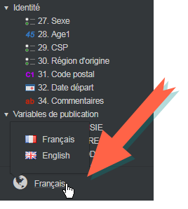

Export the view
You can export a view in several formats, to do so, proceed as follows:
-
Click on the Export button from the top banner of the environment.
-
Click on Document (clicking on Print will automatically generate a pdf document for printing).
-
Choose the format in which you want to export the view.
Available formats :
-
pdf (Adobe Reader);
-
pptx (PowerPoint);
-
csv (Excel);
-
xlsx (Excel);
 Elements not included in XLSX (Excel) export
Elements not included in XLSX (Excel) export
The following elements are not included in the export:
-
Images;
-
Graphical shapes;
-
Text boxes;
-
Stacked bars: not supported by Excel conditional formatting, therefore they are converted into text;
-
Gaps and variations.
Limitations:
-
If an analysis contains more than 5 variations, they are not exported.
-
If an analysis contains more than 5 legends, they are not exported.
Trend calculation:
Only the trend calculated against the previous column is supported. Other cases are not included.
Variation display:
-
Variation icons other than arrows are not supported.
-
If variations are displayed both as icons and values, only the values are exported.
-
If you display only the icon or only the value, the display is preserved in Excel (only if the icon is an arrow).
-
-
-
docx (Word);
-
odt (LibreOffice, OpenOffice);
-
png (image format).
-
-
Set the export options:
-
File name: use the following merge fields to rename the document to be exported.
[account], [study], [view], [modality] and [datetimenow].
-
Choose the pages to export.
-
Number the pages.
-
Generate a document for each mode of a variable (select from the drop-down menu).
-
-
Click on OK to validate.
BEWARE: Exporting an analysis view relies on a connection to the WebSocket protocol established via the browser. If this protocol is blocked by your network or browser (e.g., firewall, proxy, security policy), the export will fail. Please contact your IT department to authorize outgoing WebSocket connections.

To allow the export of the view by users who have access through the share link, proceed as follows:
-
Access the view properties.
-
Click on Allow view export from the General tab.
-
(optional) Check Allow batch export for every answer option of the variable allows to generate a document for each answer option of the selected variable.
NOTE: Only variables of the single closed, scale, or code type are compatible with this option.
EXAMPLE: We are interested in exporting the view in PDF format based on the answers to the Gender question (male, female), so we will end up with two PDF files.

NOTE: Note that it is possible to export your views according to the languages available in your survey. To do this, select the language to be used from the drop-down menu provided before proceeding with the export.
